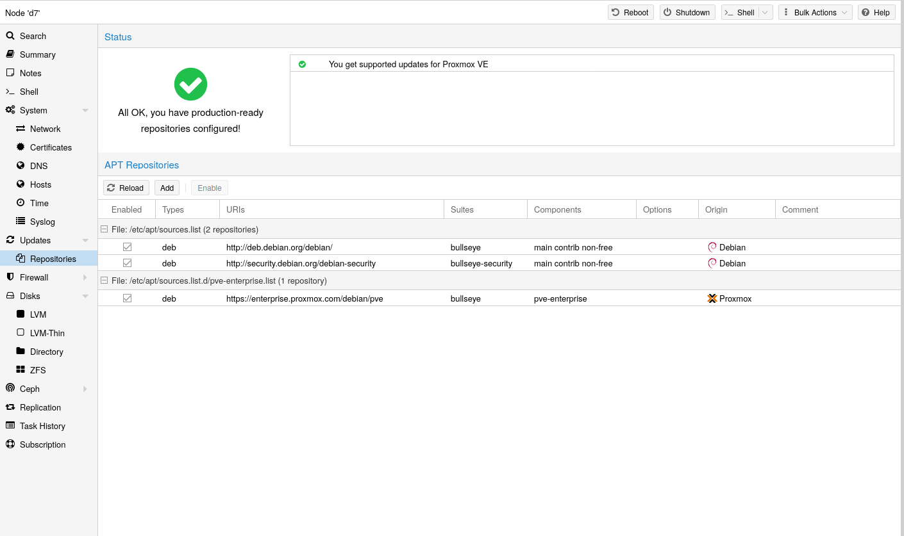

3. 호스트 시스템 관리 및 운영#
Proxmox VE는 Debian GNU/Linux를 기반으로 하며, 추가 레포지토리를 통해 Proxmox VE 관련 패키지를 제공합니다. 즉, 보안 업데이트 및 버그 수정을 포함한 모든 범위의 Debian 패키지를 사용할 수 있습니다. Proxmox VE는 우분투 커널을 기반으로 하는 자체 Linux 커널을 제공합니다. 필요한 모든 가상화 및 컨테이너 기능이 활성화되어 있으며 ZFS 및 몇 가지 추가 하드웨어 드라이버가 포함되어 있습니다.
3.1. 패키지 레포지토리#
Proxmox VE는 다른 Debian 기반 시스템과 마찬가지로
Proxmox VE는 매일 패키지 업데이트를 자동으로 확인합니다.
3.1.1. Proxmox VE의 레포지토리#
레포지토리는 소프트웨어 패키지의 모음으로, 새 소프트웨어를 설치하는 데 사용할 수 있을 뿐만 아니라 새 업데이트를 받는 데도 중요합니다.
NOTE
최신 보안 업데이트, 버그 수정 및 새로운 기능을 받으려면 유효한 Debian 및 Proxmox 레포지토리가 필요합니다.
APT 레포지토리는 /etc/apt/sources.list 파일과 /etc/apt/sources.list.d/에 있는

Proxmox VE 7부터는 웹 인터페이스에서 레포지토리 상태를 확인할 수 있습니다. 노드 요약 패널에는 개략적인 상태 개요가 표시되며, 별도의
레포지토리 활성화 또는 비활성화와 같은 기본적인 레포지토리 관리도 지원됩니다.
선호하는 소스가 가장 먼저 나와야 하며, 빈 줄은 무시됩니다.
deb http://deb.debian.org/debian bookworm main contrib
deb http://deb.debian.org/debian bookworm-updates main contrib
# security updates
deb
http://security.debian.org/debian-security bookworm-security main contrib
Proxmox VE는 세 가지 패키지 레포지토리를 제공합니다.
3.1.2. Proxmox VE Enterprise Repository#
이는 권장되는 저장소이며 모든 버트온 라이선스 구독자가 이용할 수 있습니다. 가장 안정적인 패키지가 포함되어 있으며 프로덕션 환경에 적합합니다.
pve-enterprise 저장소에 접근하려면 유효한 구독 키가 필요하다는 점에 유의하십시오. 당사는 다양한 지원 수준을 제공하며, 자세한 내용은 https://proxmox.com/en/proxmox-virtual-environment/pricing에서 확인하실 수 있습니다.
파일에서 줄 시작 부분에 ‘#’을 추가하여 주석 처리함으로써 이 저장소를 비활성화할 수 있습니다. 이렇게 하면 호스트에 구독 키가 없는 경우 오류 메시지가 표시되지 않습니다. 이 경우 pve-no-subscription 저장소를 구성하시기 바랍니다.
이 레포지토리는 권장 레포지토리이며 모든 Proxmox VE 구독 사용자가 사용할 수 있습니다. 가장 안정적인 패키지가 포함되어 있으며 프로덕션용으로 적합합니다.
deb
https://enterprise.proxmox.com/debian/pve bookworm pve-enterprise
위 줄의 첫 번째 줄에# 를 사용하여 주석을 달면 이 레포지토리를 비활성화할 수 있습니다. 이렇게 하면 호스트에 구독 키가 없는 경우 오류 메시지가 표시되지 않습니다. 이 경우pve-no-subscription 레포지토리를 구성하세요.
3.1.3. Proxmox VE No-Subscription Repository#
이름에서 알 수 있듯이 이 레포지토리에 액세스하는 데는 구독 키가 필요하지 않습니다. 테스트 및 비프로덕션 용도로 사용할 수 있습니다. 이러한 패키지는 항상 철저한 테스트와 검증을 거치는 것은 아니므로 프로덕션 서버에서는 사용하지 않는 것이 좋습니다.
이 레포지토리는
/etc/apt/sources.list 파일
deb http://ftp.debian.org/debian bookworm main contrib
deb http://ftp.debian.org/debian bookworm-updates main contrib
# Proxmox VE pve-no-subscription repository provided by proxmox.com,
# NOT recommended for production use
deb http://download.proxmox.com/debian/pve bookworm pve-no-subscription
# security updates
deb http://security.debian.org/debian-security bookworm-security main contrib
3.1.4. Proxmox VE Test Repository#
이 레지토리에는 최신 패키지가 포함되어 있으며 주로 개발자가 새로운 기능을 테스트하는 데 사용됩니다. 구성하려면
pvetest에 대한 sources.list 항목
deb http://download.proxmox.com/debian/pve bookworm pvetest
pvetest 레포지토리는 이름에서 알 수 있듯이 새로운 기능이나 버그 수정을 테스트하는 용도로만 사용해야 합니다.
3.1.5. Ceph Squid Enterprise Repository#
이 레지토리에는 엔터프라이즈용 Proxmox VE Ceph 19.2 Squid 패키지가 있습니다. 프로덕션에 적합합니다. Proxmox VE에서 Ceph 클라이언트 또는 전체 Ceph 클러스터를 실행하는 경우 이 레포지토리를 사용하세요.
/etc/apt/sources.list.d/ceph.list 파일
deb https://enterprise.proxmox.com/debian/ceph-squid bookworm enterprise
3.1.6. Ceph Squid No-Subscription Repository#
이 Ceph 레포지토리에는 엔터프라이즈 레포지토리로 이동하기 전과 테스트 레포지토리로 이동한 후의 Ceph 19.2 Squid 패키지가 포함되어 있습니다.
프로덕션 머신에는 엔터프라이즈 레포지토리를 사용하는 것이 좋습니다.
/etc/apt/sources.list.d/ceph.list 파일
deb http://download.proxmox.com/debian/ceph-squid bookworm no-subscription
3.1.7. Ceph Squid Test Repository#
이 Ceph 레포지토리에는 메인 레포지토리로 이동하기 전의 Ceph 19.2 Squid 패키지가 포함되어 있습니다. 이 레포지토리는 Proxmox VE에서 새로운 Ceph 릴리스를 테스트하는 데 사용됩니다.
/etc/apt/sources.list.d/ceph.list 파일
deb http://download.proxmox.com/debian/ceph-squid bookworm test
3.1.8. Ceph Reef Enterprise Repository#
이 레포지토리에는 엔터프라이즈용 Proxmox VE Ceph 18.2 Reef 패키지가 있습니다. 프로덕션에 적합합니다. 이 레포지토리는 Proxmox VE에서 Ceph 클라이언트 또는 전체 Ceph 클러스터를 실행하는 경우 사용합니다.
/etc/apt/sources.list.d/ceph.list 파일
deb https://enterprise.proxmox.com/debian/ceph-reef bookworm enterprise
3.1.9. Ceph Reef No-Subscription Repository#
이 Ceph 레포지토리에는 엔터프라이즈 레포지토리로 이동하기 전과 테스트 레포지토리로 이동한 후의 Ceph 18.2 Reef 패키지가 포함되어 있습니다.
프로덕션 머신에는 엔터프라이즈 레포지토리를 사용하는 것이 좋습니다.
/etc/apt/sources.list.d/ceph.list 파일
deb http://download.proxmox.com/debian/ceph-reef bookworm no-subscription
3.1.10. Ceph Reef Test Repository#
이 Ceph 레포지토리에는 메인 레포지토리로 이동하기 전의 Ceph 18.2 Reef 패키지가 포함되어 있습니다. 이 레포지토리는 Proxmox VE에서 새로운 Ceph 릴리스를 테스트하는 데 사용됩니다.
/etc/apt/sources.list.d/ceph.list 파일
deb http://download.proxmox.com/debian/ceph-reef bookworm test
3.2. 시스템 소프트웨어 업데이트#
Proxmox는 모든 레포지토리에 대해 정기적으로 업데이트를 제공합니다. 업데이트를 설치하려면 웹 기반 GUI 또는 다음 CLI 명령을 사용하세요:
# apt-get update
# apt-get dist-upgrade
APT 패키지 관리 시스템은 매우 유연하며 많은 기능을 제공합니다.
최신 패치 및 보안 관련 수정 사항을 적용하려면 정기적인 업데이트가 필수입니다. 주요 시스템 업그레이드는 Proxmox VE 커뮤니티 포럼에서 발표됩니다.
3.3. 펌웨어 업데이트#
펌웨어 업데이트는 베어메탈 서버에서 Proxmox VE를 실행할 때 적용해야 합니다. 디바이스 패스스루를 사용하는 경우와 같이 게스트 내에서 펌웨어 업데이트를 구성하는 것이 적절한지 여부는 설정에 따라 크게 달라지므로 본 문서의 범위를 벗어납니다.
펌웨어 업데이트는 정기적인 소프트웨어 업데이트와 더불어 안정적이고 안전한 운영을 위해서도 중요합니다.
펌웨어 업데이트를 받아 적용할 때는 가능한 한 빨리 또는 전혀 받지 않도록 사용 가능한 옵션을 조합하여 적용하는 것이 좋습니다.
펌웨어라는 용어는 일반적으로 언어학적으로 마이크로코드(CPU용)와 펌웨어(기타 장치용)로 나뉩니다.
3.3.1. 영구 펌웨어#
이 섹션은 모든 장치에 적합합니다. 일반적으로 BIOS/UEFI 업데이트에 포함된 업데이트된 마이크로코드는 마더보드에 저장되는 반면, 다른 펌웨어는 각 장치에 저장됩니다. 이 영구적인 방법은 부팅 시 업데이트된 마이크로코드를 최대한 빨리 정기적으로 로드할 수 있기 때문에 CPU에 특히 중요합니다.
이는 모든 디바이스에 적용됩니다. 일반적으로 BIOS/UEFI 업데이트에 포함되는 업데이트된 마이크로코드는 마더보드에 저장되며, 다른 펌웨어는 해당 디바이스에 저장됩니다. 이 영구적인 방식은 특히 CPU에 중요한데, 부팅 시 가능한 한 빨리 업데이트된 마이크로코드를 정기적으로 로드할 수 있기 때문입니다.
사용 가능한 업데이트 방법은 하드웨어 벤더에 문의하여 확인하시기 바랍니다.
서버의 경우 편리한 업데이트 방법으로는 다음과 같은 옵션이 있습니다:
Dell의 Lifecycle Manager
HPE의 Service Pack 일부 하드웨어의 경우 Linux용 유틸리티도 제공됩니다:
NVIDIA ConnectX 카드: mlxup
Broadcom 네트워크 카드: bnxtnvm 또는 niccli LVFS(Linux Vendor Firmware Service)도 하나의 옵션입니다. 단, 다음 조건을 충족해야 합니다:
하드웨어 벤더와의 협력 관계가 있어야 함
지원되는 하드웨어를 사용해야 함
시스템이 2014년 이후에 제조되었어야 함
UEFI를 통해 부팅되어야 함 이러한 방법들을 통해 펌웨어를 안전하고 효율적으로 업데이트할 수 있습니다.
버트온은 자체 서명 키를 사용한 보안 부팅 지원을 위해 자체 버전의 fwupd 패키지를 제공합니다. 이 패키지는 하이퍼바이저에서 udisks2 패키지 사용 시 발생하는 문제로 인해 의도적으로 udisks2에 대한 의존성 권장을 제거했습니다. 따라서 /etc/fwupd/daemon.conf 파일에서 EFI 파티션의 올바른 마운트 포인트를 명시적으로 구성해야 합니다. 예를 들면 다음과 같습니다:
[fwupd]
EspLocation=/boot/efi
이렇게 설정함으로써 fwupd가 EFI 시스템 파티션의 위치를 정확히 인식할 수 있게 됩니다. 이는 펌웨어 업데이트 프로세스가 올바르게 작동하는 데 필수적입니다.
3.4. 네트워크 구성#
버트온은 Linux 네트워크 스택을 사용합니다. 이를 통해 노드에서 유연하게 네트워크를 설정할 수 있습니다. 설정은 GUI를 통해 수행하거나 전체 네트워크 구성이 포함된 /etc/network/interfaces 파일을 직접 편집하여 수행할 수 있습니다. 전체 형식 설명은 interfaces(5) 매뉴얼 페이지에서 확인할 수 있습니다. 모든 버트온 관리 도구는 사용자의 직접적인 수정 사항을 유지하려고 노력하지만, 오류를 방지하기 위해 GUI 사용을 권장합니다.
GuestOS를 기본 물리 네트워크에 연결하려면 Linux 브릿지 인터페이스(일반적으로 vmbrX라고 함)가 필요합니다. 이는 GuestOS와 물리 인터페이스가 연결되는 가상 스위치로 생각할 수 있습니다. 이 섹션에서는 bond를 통한 이중화, VLAN 또는 라우팅및 NAT 설정과 같은 다양한 사용 사례에 맞게 네트워크를 설정하는 방법에 대한 예시를 제공합니다.
기본 Debian 도구인
ifup및ifdown사용은 권장되지 않습니다. 이러한 도구들은ifdown vmbrX실행 시 모든 게스트 트래픽을 중단시키고, 이후 동일한 브릿지에서ifup을 실행해도 게스트 연결을 복구하지 않는 등의 문제점이 있습니다.
3.4.1. 네트워크 변경 사항 적용#
버트온은 변경 사항을 /etc/network/interfaces 파일에 직접 작성하지 않습니다. 대신 /etc/network/interfaces.new라는 임시 파일에 작성합니다. 이를 통해 여러 관련 변경 사항을 한 번에 수행할 수 있습니다. 또한 잘못된 네트워크 구성으로 인해 노드에 접근할 수 없게 되는 상황을 방지하기 위해, 최종적으로 변경 사항이 올바른지 확인할 수 있습니다.
권장되는 ifupdown2 패키지(Proxmox VE 7.0 이후 새 설치의 기본값)를 사용하면 재부팅 없이 네트워크 구성 변경 사항을 적용할 수 있습니다. GUI를 통해 네트워크 구성을 변경한 경우, Apply Configuration 버튼을 클릭하면 됩니다. 이 작업은 interfaces.new 임시 파일의 변경 사항을 /etc/network/interfaces로 이동시키고 실시간으로 적용합니다.
/etc/network/interfaces 파일을 직접 수동으로 변경한 경우, ifreload -a를 실행하여 적용할 수 있습니다.
3.4.2. 명명 규칙#
현재 다음과 같은 디바이스 이름 명명 규칙을 사용하고 있습니다:
이더넷 장치:
en*systemd 네트워크 인터페이스 이름
이 명명 체계는 버트온 5.0 이후 버전에서 사용됩니다.
이더넷 장치:
eth[N]0 ≤ N (
eth0, eth1, …)이 명명 체계는 버트온 5.0 이전 버전에서 사용됩니다. 5.0 이상 버전으로 업그레이드 시 장치 이름은 그대로 유지됩니다.
브릿지 이름: 일반적으로
vmbr[N]0 ≤ N ≤ 4094 (
vmbr0 - vmbr4094)문자로 시작하고 최대 10자 길이의 영숫자 문자열도 사용 가능합니다.
본드:
bond[N]0 ≤ N (
bond0, bond1,…)
VLAN: 장치 이름에 마침표(.)로 구분된 VLAN 번호를 추가합니다 (ex:
eno1.50, bond1.30)
이러한 명명 규칙은 장치 이름이 장치 유형을 암시하므로 네트워크 문제를 디버깅하기 쉽게 만듭니다.
Systemd는 네트워크 장치 이름에 대한 버전 관리 명명 체계를 정의합니다. 이 체계는 이더넷 네트워크 장치에 대해 en이라는 두 글자 접두사를 사용합니다. 다음 문자는 장치 드라이버, 장치 위치 및 기타 속성에 따라 달라집니다. 가능한 패턴은 다음과 같습니다:
o<index>[n<phys_port_name>|d<dev_port>]: 온보드(on-board) 장치s<slot>[f<function>][n<phys_port_name>|d<dev_port>]: 핫플러그 ID 기반 장치[P<domain>]p<bus>s<slot>[f<function>][n<phys_port_name>|d<dev_port>]: 버스 ID 기반 장치x<MAC>: MAC 주소 기반 장치
[주요 구성 요소 설명]
index: 장치의 인덱스 번호phys_port_name: 물리적 포트 이름dev_port: 장치 포트 번호slot: PCI 슬롯 번호function: PCI 기능 번호domain: PCI 도메인bus: PCI 버스 번호MAC: 장치의 MAC 주소
네트워크 인터페이스 명명 규칙은 다음과 같은 일반적인 패턴을 사용합니다:
eno1— 첫 번째 온보드 NIC(Network Interface Card)enp3s0f1— PCI 버스 3, 슬롯 0의 NIC의 함수 1 이러한 명명 규칙은 하드웨어 위치와 특성을 기반으로 하여 일관성 있고 예측 가능한 이름을 제공합니다.
새로운 systemd 버전은 새로운 네트워크 인터페이스 명명 체계를 정의할 수 있으며, 이는 기본적으로 사용됩니다. 따라서 버트온 주요 업그레이드와 같은 상황에서 systemd를 새 버전으로 업데이트하면 네트워크 디바이스의 이름이 변경될 수 있으며, 네트워크 구성을 조정해야 할 수 있습니다.
명명 체계 버전을 수동으로 고정하여 새 버전으로 인한 이름 변경을 방지할 수 있습니다. 그러나 명명 체계 버전을 고정해도 커널이나 드라이버 업데이트로 인해 네트워크 인터페이스 이름이 여전히 변경될 수 있습니다
특정 네트워크 장치의 이름 변경을 완전히 방지하려면 링크 파일을 사용하여 수동으로 이름을 재정의할 수 있습니다. 이 방법을 통해 장치에 고정된 이름을 지정할 수 있습니다
3.4.3. 네트워크 구성 선택하기#
현재 네트워크 구성과 리소스에 따라 브릿지, 라우팅 또는 마스커레이딩 네트워킹 설정 중에서 선택할 수 있습니다.
이 경우 브릿지(Bridged) 모델이 가장 적합하며, 이는 버트온 첫 설치의 기본 모드이기도 합니다. 각 GuestOS은 버트온 브릿지에 연결된 가상 인터페이스를 갖게 됩니다. 이는 게스트 네트워크 카드가 LAN의 새 스위치에 직접 연결된 것과 유사한 효과를 나타내며, 버트온 호스트가 스위치 역할을 수행합니다.
이 설정에서는 제공업체가 허용하는 것에 따라 브릿지(Bridged) 또는 라우팅(Routed) 모델을 사용할 수 있습니다.
이 경우 게스트 시스템에 대한 나가는 네트워크 액세스를 얻는 유일한 방법은 마스커레이딩을 사용하는 것입니다. 게스트에 대한 들어오는 네트워크 액세스의 경우 포트 포워딩을 구성해야 합니다.
추가 유연성을 위해 VLAN(IEEE 802.1q) 및 “링크 집계”라고도 알려진 네트워크 본딩을 구성할 수 있습니다. 이렇게 하면 복잡하고 유연한 가상 네트워크를 구축할 수 있습니다.
3.4.4. 브릿지를 사용한 기본 구성#
브릿지는 소프트웨어로 구현된 물리 네트워크 스위치와 같습니다. 모든 가상 게스트가 하나의 브릿지를 공유하거나 네트워크 도메인을 분리하기 위해 여러 개의 브릿지를 만들 수 있습니다. 각 호스트는 최대 4094개의 브릿지를 가질 수 있습니다.
설치 프로그램은 첫 번째 이더넷 카드에 연결되는
auto lo
iface lo inet loopback
iface eno1 inet manual
auto vmbr0
iface vmbr0 inet static
address 192.168.10.2/24
gateway 192.168.10.1
bridge-ports eno1
bridge-stp off
bridge-fd 0
가상 머신은 마치 물리 네트워크에 직접 연결된 것처럼 동작합니다. 네트워크는 모든 가상 머신을 네트워크에 연결하는 네트워크 케이블이 하나만 있어도 각 가상 머신에 고유한 MAC이 있는 것으로 간주합니다.
3.4.5 라우팅 구성#
대부분의 호스팅 제공업체는 위의 설정을 지원하지 않습니다. 보안상의 이유로 단일 인터페이스에서 여러 MAC 주소를 감지하는 즉시 네트워킹을 비활성화합니다.
일부 호스팅 제공업체는 관리 인터페이스를 통해 추가 MAC을 등록할 수 있도록 허용합니다. 이렇게 하면 문제를 피할 수 있지만 각 VM에 대해 MAC을 등록해야 하므로 구성이 번거로울 수 있습니다. 단일 인터페이스를 통해 모든 트래픽을 ‘라우팅’하면 이 문제를 피할 수 있습니다. 이렇게 하면 모든 네트워크 패킷이 동일한 MAC 주소를 사용하도록 할 수 있습니다.
일반적인 시나리오는 공용 IP(예시로는
auto lo
iface lo inet loopback
auto eno0
iface eno0 inet static
address 198.51.100.5/29
gateway 198.51.100.1
post-up echo 1 > /proc/sys/net/ipv4/ip_forward
post-up echo 1 > /proc/sys/net/ipv4/conf/eno0/proxy_arp
auto vmbr0
iface vmbr0 inet static
address 203.0.113.17/28
bridge-ports none
bridge-stp off
bridge-fd 0
### 3.4.6 iptables를 사용한 마스커레이딩(NAT) 마스커레이딩을 사용하면 개인 IP 주소만 있는 게스트가 발신 트래픽에 호스트 IP 주소를 사용하여 네트워크에 액세스할 수 있습니다. 각 발신 패킷은 호스트에서 발신한 것처럼 보이도록
auto lo
iface lo inet loopback
auto eno1
#real IP address
iface eno1 inet static
address 198.51.100.5/24
gateway 198.51.100.1
auto vmbr0
#private sub network
iface vmbr0 inet static
address 10.10.10.1/24
bridge-ports none
bridge-stp off
bridge-fd 0
post-up echo 1 > /proc/sys/net/ipv4/ip_forward
post-up iptables -t nat -A POSTROUTING -s '10.10.10.0/24' -o eno1 -j MASQUERADE
post-down iptables -t nat -D POSTROUTING -s '10.10.10.0/24' -o eno1 -j MASQUERADE
방화벽이 활성화된 일부 마스커레이드 설정에서는 나가는 연결에 컨트랙트 영역이 필요할 수 있습니다. 그렇지 않으면 방화벽이마스커레이드 가 아닌 VM 브릿지의포스트라우팅 을 선호하기 때문에 나가는 연결을 차단할 수 있습니다.
post-up iptables -t raw -I PREROUTING -i fwbr+ -j CT --zone 1
post-down iptables -t raw -D PREROUTING -i fwbr+ -j CT --zone 1
3.4.7 Linux Bond#
본딩(NIC 티밍 또는 링크 집계라고도 함)은 여러 NIC를 단일 네트워크 장치에 바인딩하는 기술입니다. 네트워크 내결함성 확보, 성능 향상 또는 두 가지 목표를 함께 달성하는 등 다양한 목표를 달성할 수 있습니다.
파이버 채널(FC)과 같은 고속 하드웨어와 관련 스위칭 하드웨어는 상당히 비쌀 수 있습니다. 링크 집계를 수행하면 두 개의 NIC를 하나의 논리적 인터페이스로 표시하여 속도를 두 배로 높일 수 있습니다. 이는 대부분의 스위치에서 지원되는 기본 Linux 커널 기능입니다. 노드에 이더넷 포트가 여러 개 있는 경우 네트워크 케이블을 다른 스위치로 연결하여 장애 지점을 분산할 수 있으며, 네트워크 문제 발생 시 본딩된 연결이 한 케이블 또는 다른 케이블로 페일오버됩니다.
집계된 링크는 라이브 마이그레이션의 지연을 개선하고 Proxmox VE 클러스터 노드 간의 데이터 복제 속도를 향상시킬 수 있습니다.
본딩에는 7가지 모드가 있습니다:
Round-robin (balance-rr) 사용 가능한 첫 번째 네트워크 인터페이스(NIC) 슬레이브부터 마지막 슬레이브까지 순차적인 순서로 네트워크 패킷을 전송합니다.
이 모드는 부하 분산 및 내결함성을 제공합니다.
Active-backup (active-backup) 본드에서 하나의 NIC 슬레이브만 활성화됩니다. 활성 슬레이브에 장애가 발생하는 경우에만 다른 슬레이브가 활성화됩니다.
네트워크 스위치의 왜곡을 방지하기 위해 단일 논리적 본드 인터페이스의 MAC 주소는 하나의 NIC(포트)에서만 외부에 표시됩니다.
이 모드는 내결함성을 제공합니다.
XOR (balance-xor) [(소스 MAC 주소와 대상 MAC 주소를 XOR한) 모듈로 NIC 슬레이브 수]를 기준으로 네트워크 패킷을 전송합니다. 이 모드는 각 대상 MAC 주소에 대해 동일한 NIC 슬레이브를 선택합니다.
이 모드는 부하 분산 및 내결함성을 제공합니다.
브로드캐스트 (broadcast) 모든 슬레이브 네트워크 인터페이스에서 네트워크 패킷을 전송합니다.
이 모드는 내결함성을 제공합니다.
IEEE 802.3ad Dynamic link aggregation (802.3ad)(LACP) 동일한 속도 및 이중 설정을 공유하는 집계 그룹을 생성합니다.
802.3ad 사양에 따라 활성 애그리게이터 그룹의 모든 슬레이브 네트워크 인터페이스를 활용합니다.
적응형 전송 부하 분산 (balance-tlb) 특별한 네트워크 스위치 지원이 필요하지 않은 Linux 본딩 드라이버 모드입니다.
나가는 네트워크 패킷 트래픽은 각 네트워크 인터페이스 슬레이브의 현재 부하(속도에 따라 계산됨)에 따라 분산됩니다. 들어오는 트래픽은 현재 지정된 하나의 슬레이브 네트워크 인터페이스에서 수신됩니다.
이 수신 슬레이브에 장애가 발생하면 다른 슬레이브가 장애가 발생한 수신 슬레이브의 MAC 주소를 이어받습니다.
적응형 부하 분산 (balance-alb) PV4 트래픽에 대한 balance-tlb와 수신 부하 분산(rlb)을 포함하며, 특별한 네트워크 스위치 지원이 필요하지 않습니다. 수신 부하 분산은 ARP 협상을 통해 이루어집니다.
본딩 드라이버는 로컬 시스템에서 보내는 ARP 응답을 가로채서 소스 하드웨어 주소를 단일 논리적 본딩 인터페이스의 NIC 슬레이브 중 하나의 고유 하드웨어 주소로 덮어쓰므로 서로 다른 네트워크 피어가 네트워크 패킷 트래픽에 다른 MAC 주소를 사용합니다.
스위치가 LACP(IEEE 802.3ad) 프로토콜을 지원하는 경우 해당 본딩 모드(802.3ad)를 사용하는 것이 좋습니다. 그렇지 않은 경우에는 일반적으로 active-backup 모드를 사용해야 합니다.
클러스터 네트워크(
다음 본딩 구성은 분산/공유 스토리지 네트워크로 사용할 수 있습니다. 이 경우 속도가 빨라지고 네트워크가 내결함성을 갖게 된다는 이점이 있습니다.
예시: 고정 IP로 본딩 사용
auto lo
iface lo inet loopback
iface eno1 inet manual
iface eno2 inet manual
iface eno3 inet manual
auto bond0
iface bond0 inet static
bond-slaves eno1 eno2
address 192.168.1.2/24
bond-miimon 100
bond-mode 802.3ad
bond-xmit-hash-policy layer2+3
auto vmbr0
iface vmbr0 inet static
address 10.10.10.2/24
gateway 10.10.10.1
bridge-ports eno3
bridge-stp off
bridge-fd 0
또 다른 가능성은 본딩을 브릿지 포트로 직접 사용하는 것입니다. 이는 게스트 네트워크에 내결함성을 부여하는 데 사용할 수 있습니다.
예시: 브릿지 포트로 본딩 사용
auto lo
iface lo inet loopback
iface eno1 inet manual
iface eno2 inet manual
auto bond0
iface bond0 inet manual
bond-slaves eno1 eno2
bond-miimon 100
bond-mode 802.3ad
bond-xmit-hash-policy layer2+3
auto vmbr0
iface vmbr0 inet static
address 10.10.10.2/24
gateway 10.10.10.1
bridge-ports bond0
bridge-stp off
bridge-fd 0
3.4.8. VLAN 802.1Q#
가상 LAN(VLAN)은 네트워크 상에서 레이어2에서 분할되고 격리된 브로드캐스트 도메인입니다. 따라서 물리 네트워크에 각각 다른 네트워크와 독립적인 여러 네트워크(4096개)를 가질 수 있습니다.
각 VLAN 네트워크는 흔히
게스트 네트워크용 VLAN
Proxmox VE는 이 설정을 기본으로 지원합니다. VM을 생성할 때 VLAN 태그를 지정할 수 있습니다. VLAN 태그는 게스트 네트워크 구성의 일부입니다. 네트워킹 계층은 브리지 구성에 따라 다양한 모드를 지원하여 VLAN을 구현합니다:
Linux 브릿지에서 VLAN 인식
이 경우 각 게스트의 가상 네트워크 카드가 Linux 브릿지에서 투명하게 지원되는 VLAN 태그에 할당됩니다. 트렁크(Trunk) 모드도 가능하지만 이 경우 게스트에서 구성이 필요합니다.
Linux 브리지의 “기존” VLAN
이 방법은 VLAN 인식 방법과 달리 투명하지 않으며 각 VLAN에 대해 연결된 브리지가 있는 VLAN 장치를 만듭니다.
즉, 예를 들어 VLAN 5에 게스트를 생성하면 재부팅할 때까지 유지되는 두 개의 인터페이스 eno1.5 및 vmbr0v5가 생성됩니다.
Open vSwitch VLAN
이 모드는 OVS VLAN 기능을 사용합니다.
게스트 구성 VLAN
게스트 내부에 VLAN이 할당됩니다. 이 경우 설정이 게스트 내부에서 완전히 이루어지며 외부에서 영향을 받을 수 없습니다.
단일 가상 NIC에서 둘 이상의 VLAN을 사용할 수 있다는 장점이 있습니다.
호스트의 VLAN
호스트가 격리된 네트워크와 통신할 수 있도록 허용합니다. 모든 네트워크 장치(NIC, 본딩, 브릿지)에 VLAN 태그를 적용할 수 있습니다. 일반적으로 VLAN은 물리적 NIC와의 사이에 추상화 계층이 가장 적은 인터페이스에 구성해야 합니다.
예를 들어 호스트 관리 주소를 별도의 VLAN에 배치하려는 기본 구성의 경우입니다.
>
예시: 기존 Linux 브릿지를 사용하여 Proxmox VE 관리 IP에 VLAN 5 사용
auto lo
iface lo inet loopback
iface eno1 inet manual
iface eno1.5 inet manual
auto vmbr0v5
iface vmbr0v5 inet static
address 10.10.10.2/24
gateway 10.10.10.1
bridge-ports eno1.5
bridge-stp off
bridge-fd 0
auto vmbr0
iface vmbr0 inet manual
bridge-ports eno1
bridge-stp off
bridge-fd 0
예시: VLAN 인식 Linux 브릿지를 사용하여 Proxmox VE 관리 IP에 VLAN 5 사용
auto lo
iface lo inet loopback
iface eno1 inet manual
auto vmbr0.5
iface vmbr0.5 inet static
address 10.10.10.2/24
gateway 10.10.10.1
auto vmbr0
iface vmbr0 inet manual
bridge-ports eno1
bridge-stp off
bridge-fd 0
bridge-vlan-aware yes
bridge-vids 2-4094
다음 예는 동일한 설정이지만, 네트워크 장애로부터 안전하게 보호하기 위해 본딩를 사용합니다.
예시: 기존 Linux 브릿지를 사용하여 Proxmox VE 관리 IP에 bond0을 사용하여 VLAN 5 사용
auto lo
iface lo inet loopback
iface eno1 inet manual
iface eno2 inet manual
auto bond0
iface bond0 inet manual
bond-slaves eno1 eno2
bond-miimon 100
bond-mode 802.3ad
bond-xmit-hash-policy layer2+3
iface bond0.5 inet manual
auto vmbr0v5
iface vmbr0v5 inet static
address 10.10.10.2/24
gateway 10.10.10.1
bridge-ports bond0.5
bridge-stp off
bridge-fd 0
auto vmbr0
iface vmbr0 inet manual
bridge-ports bond0
bridge-stp off
bridge-fd 0
3.4.9. 노드에서 IPv6 비활성화하기#
Proxmox VE는 IPv6 배포 여부에 관계없이 모든 환경에서 올바르게 작동합니다. 모든 설정을 제공된 기본값으로 두는 것이 좋습니다.
그래도 노드에서 IPv6 지원을 비활성화해야 하는 경우, 적절한
net.ipv6.conf.all.disable_ipv6 = 1
net.ipv6.conf.default.disable_ipv6 = 1
이 방법은 커널 명령줄에서 IPv6 모듈의 로딩을 비활성화하는 것보다 선호됩니다.
3.4.10. 브릿지에서 MAC 학습 기능 비활성화하기#
기본적으로 MAC 학습 기능은 가상 게스트 및 해당 네트워크와의 원활한 환경을 보장하기 위해 브릿지에서 사용하도록 설정되어 있습니다.
그러나 일부 환경에서는 원하지 않을 수 있습니다. Proxmox VE 7.3부터는 예를 들어 /etc/network/interfaces’의 브리지에서 ‘bridge-disable-mac-learning 1 구성을 설정하여 브릿지에서 MAC 학습을 비활성화할 수 있습니다:
# ...
auto vmbr0
iface vmbr0 inet static
address 10.10.10.2/24
gateway 10.10.10.1
bridge-ports ens18
bridge-stp off
bridge-fd 0
bridge-disable-mac-learning 1
활성화되면 Proxmox VE는 VM 및 컨테이너에서 구성된 MAC 주소를 수동으로 브릿지 포워딩 데이터베이스에 추가하여 게스트가 네트워크를 계속 사용할 수 있도록 하지만 실제 MAC 주소를 사용하는 경우에만 네트워크를 사용할 수 있도록 합니다.
3.5. 시간 동기화#
Proxmox VE 클러스터 스택 자체는 모든 노드의 시간이 정확하게 동기화되어 있다는 사실에 크게 의존합니다. 모든 노드의 현지 시간이 동기화되지 않으면 Ceph와 같은 일부 다른 구성 요소도 제대로 작동하지 않습니다.
노드 간의 시간 동기화는
chrony, ntp 또는openntpd 중 하나를 수동으로 설치하는 것이 좋습니다.
3.5.1. 사용자 지정 NTP 서버 사용#
경우에 따라 기본값이 아닌 NTP 서버를 사용해야 할 수도 있습니다. 예를 들어, 제한적인 방화벽 규칙으로 인해 공용 인터넷에 액세스할 수 없는 경우 로컬 NTP 서버를 설정하고 NTP 서비스에 이를 사용하도록 지시해야 합니다.
chrony를 사용하는 시스템의 경우:
server ntp1.example.com iburst
server ntp2.example.com iburst
server ntp3.example.com iburst
|# systemctl restart chronyd
저널을 확인하여 새로 구성된 NTP 서버가 사용되고 있는지 확인합니다.
|# journalctl –since -1h -u chrony
...
Aug 26 13:00:09 node1 systemd[1]: Started chrony, an NTP client/server.
Aug 26 13:00:15 node1 chronyd[4873]: Selected source 10.0.0.1 (ntp1.example.com)
Aug 26 13:00:15 node1 chronyd[4873]: System clock TAI offset set to 37 seconds
...
systemd-timesyncd를 사용하는 시스템의 경우:
[Time]
NTP=ntp1.example.com ntp2.example.com ntp3.example.com ntp4.example.com
그런 다음 동기화 서비스를 다시 시작하고(
...
Oct 07 14:58:36 node1 systemd[1]: Stopping Network Time Synchronization...
Oct 07 14:58:36 node1 systemd[1]: Starting Network Time Synchronization...
Oct 07 14:58:36 node1 systemd[1]: Started Network Time Synchronization.
Oct 07 14:58:36 node1 systemd-timesyncd[13514]: Using NTP server 10.0.0.1:123 (ntp1.example.com).
Oct 07 14:58:36 node1 systemd-timesyncd[13514]: interval/delta/delay/jitter/drift 64s/-0.002s/0.020s/0.000s/-31ppm
...
3.6. 외부 메트릭 서버#
Proxmox VE에서는 호스트, 가상 게스트 및 스토리지에 대한 다양한 통계를 주기적으로 수신하는 외부 메트릭 서버를 정의할 수 있습니다.
현재 지원되는 서버는 다음과 같습니다:
Graphite (https://graphiteapp.org/ 참조)
InfluxDB (https://www.influxdata.com/time-series-platform/influxdb/ 참조)
외부 메트릭 서버 정의는
3.6.1. Graphite 서버 구성#
기본 포트는
기본적으로 Proxmox VE는 UDP를 통해 데이터를 전송하므로 이를 허용하도록 그래파이트 서버를 구성해야 합니다. 여기에서 표준
TCP를 사용하도록 플러그인을 구성할 수도 있습니다. 중요한
3.6.2. InfluxDB 플러그인 구성#
Proxmox VE는 UDP를 통해 데이터를 전송하므로 이를 위해 InfluxDB 서버를 구성해야 합니다. 필요한 경우 MTU도 여기에서 구성할 수 있습니다.
다음은 InfluxDB 서버에 대한 구성 예시입니다(InfluxDB 서버에서):
[[udp]]
enabled = true
bind-address = "0.0.0.0:8089"
database = "proxmox"
batch-size = 1000
batch-timeout = "1s"
이 구성을 사용하면 서버가 포트 8089의 모든 IP 주소에서 수신 대기하고
또는 InfluxDB 2.x의 http API를 사용하도록 플러그인을 구성할 수도 있습니다. InfluxDB 1.8.x에는 이 v2 API에 대한 포워드 호환 API 엔드포인트가 포함되어 있습니다.
이를 사용하려면 구성에 따라
InfluxDB의 v2 API는 인증을 통해서만 사용할 수 있으므로 올바른 버킷에 쓸 수 있는 토큰을 생성하여 설정해야 합니다.
InfluxDB의 v2 호환 API 1.8.x에서는
또한
3.7. 디스크 상태 모니터링#
견고한 이중화 스토리지가 권장되지만 로컬 디스크의 상태를 모니터링하는 것이 매우 유용할 수 있습니다.
Proxmox VE 4.3부터는
다음 명령을 실행하여 디스크의 상태를 확인할 수 있습니다:
# smartctl -a /dev/sdX
여기서 /dev/sdX는 로컬 디스크 중 하나의 경로입니다.
출력에 다음과 같이 표시되면:
SMART support is: Disabled
명령을 사용하여 활성화할 수 있습니다:
# smartctl -s on /dev/sdX
smartctl 사용 방법에 대한 자세한 내용은
기본적으로 smartmontools의 서비스인 smartd는 활성화되어 있으며, 30분마다 /dev/sdX 및 /dev/hdX 아래의 디스크에서 오류 및 경고를 검사하고 문제가 감지되면 루트로 이메일을 보냅니다.
smartd를 구성하는 방법에 대한 자세한 내용은
하드 디스크를 하드웨어 RAID 컨트롤러와 함께 사용하는 경우, RAID 어레이의 디스크와 어레이 자체를 모니터링하는 도구가 있을 가능성이 높습니다. 이에 대한 자세한 내용은 RAID 컨트롤러의 공급업체에 문의하세요.
3.8. Logical Volume Manager (LVM)#
대부분의 사용자는 로컬 디스크에 직접 Proxmox VE를 설치합니다. Proxmox VE 설치 CD는 로컬 디스크 관리를 위한 몇 가지 옵션을 제공하며, 현재 기본 설정은 LVM을 사용합니다. 설치 관리자는 이러한 설정을 위해 단일 디스크를 선택하고 해당 디스크를 볼륨 그룹(
# pvs
PV VG Fmt Attr PSize PFree
/dev/sda3 pve lvm2 a-- 7.87g 876.00m
# vgs
VG #PV #LV #SN Attr VSize VFree
pve 1 3 0 wz--n- 7.87g 876.00m
인스톨러는 이 VG 안에 3개의 논리 볼륨(
# lvs
LV VG Attr LSize Pool Origin Data% Meta%
data pve twi-a-tz-- 4.38g 0.00 0.63
root pve -wi-ao---- 1.75g
swap pve -wi-ao---- 896.00m
root : ext4로 포맷되며, 운영 체제를 포함swap : 스왑 파티션data : 이 볼륨은 LVM-thin을 사용하며 VM 이미지를 저장하는 데 사용됩니다. 이 작업에는 스냅샷 및 클론을 효율적으로 지원하기 때문에 LVM-thin을 사용하는 것이 좋습니다.
Proxmox VE 4.1까지의 버전에서는 설치 관리자가 “data”라는 표준 논리 볼륨을 생성하며, 이 볼륨은 /var/lib/vz에 마운트됩니다.
버전 4.2부터 논리 볼륨 “data”는 블록 기반 게스트 이미지를 저장하는 데 사용되는 LVM-thin 풀이며 /var/lib/vz는 단순히 루트 파일 시스템의 디렉터리입니다.
3.8.1. 하드웨어#
이러한 설정에는 하드웨어 RAID 컨트롤러(BBU 포함)를 사용할 것을 적극 권장합니다. 이렇게 하면 성능이 향상되고, 중복성이 제공되며, 디스크 교체가 더 쉬워집니다(핫 플러그 가능).
LVM 자체에는 특별한 하드웨어가 필요하지 않으며 메모리 요구 사항도 매우 낮습니다.
3.8.2. 부트 로더#
기본적으로 두 개의 부트 로더가 설치됩니다. 첫 번째 파티션에는 표준 GRUB 부트 로더가 들어 있습니다. 두 번째 파티션은
3.8.3. 볼륨 그룹 생성#
“vmdata”라는 볼륨 그룹을 생성하려는 빈 디스크
다음 명령은 /dev/sdb에 있는 모든 기존 데이터를 삭제합니다.
먼저 파티션을 만듭니다.
물리 볼륨(PV)을 생성하고 250K 메타데이터사이즈를 생성합니다.
dev/sdb1에 “vmdata”라는 이름의 볼륨 그룹을 생성합니다.
3.8.4. var/lib/vz에 대한 추가 LV 만들기#
새 thin LV를 생성하면 쉽게 할 수 있습니다.
실제 예제입니다:
이제 LV에 파일시스템을 생성해야 합니다.
마지막으로 마운트해야 합니다.
3.8.5. thin pool 크기 조정하기#
다음 명령으로 LV 및 메타데이터 풀의 크기를 조정합니다:
3.8.6. LVM-thin pool 생성#
볼륨 그룹 위에 씬 풀을 생성해야 합니다. 볼륨 그룹을 만드는 방법은 LVM 섹션을 참조하세요.
3.9. ZFS#
ZFS는 Sun Microsystems에서 설계한 결합된 파일 시스템과 논리 볼륨 관리자입니다. Proxmox VE 3.4부터 ZFS 파일 시스템의 네이티브 Linux 커널 포트가 선택적 파일 시스템과 루트 파일 시스템에 대한 추가 선택 사항으로 도입되었습니다. ZFS 모듈을 수동으로 컴파일할 필요가 없으며, 모든 패키지가 포함되어 있습니다.
ZFS를 사용하면 저예산 하드웨어로 최대의 엔터프라이즈 기능을 구현할 수 있을 뿐만 아니라 SSD 캐싱 또는 SSD 전용 설정을 활용하여 고성능 시스템을 구현할 수도 있습니다. ZFS는 적당한 CPU 및 메모리 부하와 쉬운 관리를 결합하여 비용이 많이 드는 하드웨어 RAID 카드를 대체할 수 있습니다.
일반적인 ZFS의 이점
Proxmox VE GUI 및 CLI를 통한 간편한 구성 및 관리.
신뢰성
데이터 손상으로부터 보호
파일 시스템 수준에서 데이터 압축
스냅샷
Copy-on-write 복제
다양한 RAID 수준: RAID0, RAID1, RAID10, RAIDZ-1, RAIDZ-2, RAIDZ-3, dRAID, dRAID2, dRAID3
SSD를 캐시로 사용 가능
자가 치유
지속적인 무결성 검사
대용량 스토리지를 위해 설계
네트워크를 통한 비동기 복제
오픈 소스
암호화
3.9.1. 하드웨어#
ZFS는 메모리에 크게 의존하므로 시작하려면 최소 8GB가 필요합니다. 실제로는 하드웨어/예산에 맞는 최대한 많은 용량을 사용하세요. 데이터 손상을 방지하려면 고품질 ECC RAM을 사용하는 것이 좋습니다.
전용 캐시 및/또는 로그 디스크를 사용하는 경우에는 엔터프라이즈급 SSD를 사용해야 합니다. 이렇게 하면 전반적인 성능이 크게 향상될 수 있습니다.
virtio 를 사용하지 마세요. 대신 IDE 또는 SCSI를 사용하세요(virtio SCSI 컨트롤러 유형과도 작동).
3.9.2. Root 파일시스템으로 설치#
Proxmox VE 설치 프로그램을 사용하여 설치하는 경우 root 파일 시스템으로 ZFS를 선택할 수 있습니다. 설치 시 RAID 유형을 선택해야 합니다:
RAID0 “스트라이핑”이라고도 하며, 볼륨의 용량은 모든 디스크의 용량의 합계입니다.
RAID0는 이중화하지 않으므로 단일 드라이브가 실패하면 볼륨을 사용할 수 없게 됩니다.
RAID1 “미러링”이라고도 하며, 데이터는 모든 디스크에 동일하게 기록됩니다.
이 모드는 크기가 같은 디스크가 최소 2개 필요합니다. 결과 용량은 단일 디스크의 용량입니다.
RAID10 RAID0과 RAID1의 조합입니다. 최소 4개의 디스크가 필요합니다.
RAIDZ-1 RAID-5의 변형으로, 단일 패리티입니다. 최소 3개의 디스크가 필요합니다.
RAIDZ-2 RAID-5의 변형, 이중 패리티입니다. 최소 4개의 디스크가 필요합니다.
RAIDZ-3 RAID-5의 변형, 삼중 패리티입니다. 최소 5개의 디스크가 필요합니다.
설치 프로그램은 자동으로 디스크를 분할하고,
zfspool: local-zfs
pool rpool/data
sparse
content images,rootdir
설치 후
# zpool status
pool: rpool
state: ONLINE
scan: none requested
config:
NAME STATE READ WRITE CKSUM
rpool ONLINE 0 0 0
mirror-0 ONLINE 0 0 0
sda2 ONLINE 0 0 0
sdb2 ONLINE 0 0 0
mirror-1 ONLINE 0 0 0
sdc ONLINE 0 0 0
sdd ONLINE 0 0 0
errors: No known data errors
# zfs list
NAME USED AVAIL REFER MOUNTPOINT
rpool 4.94G 7.68T 96K /rpool
rpool/ROOT 702M 7.68T 96K /rpool/ROOT
rpool/ROOT/pve-1 702M 7.68T 702M /
rpool/data 96K 7.68T 96K /rpool/data
rpool/swap 4.25G 7.69T 64K -
3.9.3. ZFS RAID 레벨 고려 사항#
ZFS 풀의 레이아웃을 선택할 때 고려해야 할 몇 가지 요소가 있습니다. ZFS 풀의 기본 구성 요소는 가상 장치 또는
성능
각
일반적인 상황은 4개의 디스크를 사용하는 것입니다. 2개의 미러 디바이스(RAID10)로 설정하면 풀은 IOPS 및 대역폭과 관련하여 2개의 단일 디스크와 같은 쓰기 특성을 갖습니다. 읽기 작업의 경우 4개의 단일 디스크와 유사합니다.
모든 중복성 수준의
실행 중인 VM의 경우 대부분의 상황에서 IOPS가 더 중요한 지표입니다.
크기, 공간 사용량 및 이중화
N개의 디스크로 구성된
RAIDZ 레벨을 사용할 때 또 다른 중요한 요소는 VM 디스크에 사용되는 ZVOL 데이터 세트의 작동 방식입니다. 각 데이터 블록에 대해 풀의 패리티 데이터는 최소한 풀의
이 동작은 ZVOL의 다음 속성을 확인할 때 관찰할 수 있습니다: